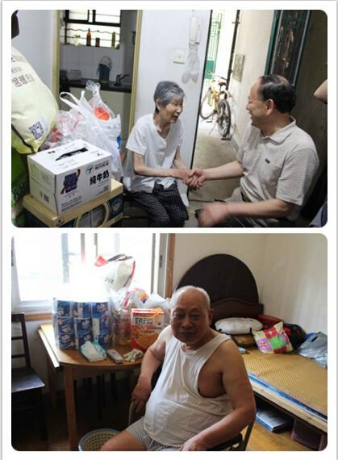
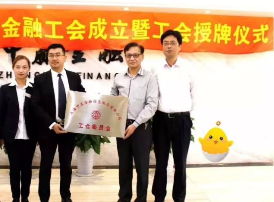
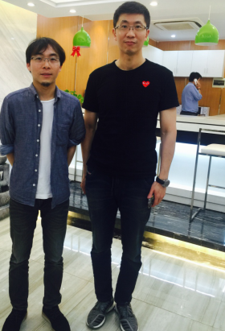
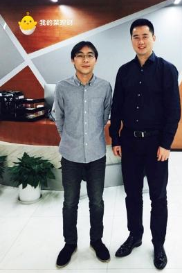

我的菜理财携上海五角场镇工会联合会关爱环卫工人
继7月5日我的菜理财与上海市杨浦区五角场镇党建办慰问两位孤贫老人后，
近日我的菜理财代表和上海市五角场镇工会联合会领导，
又一起赴上海市市容环卫局杨浦区下属单位，为炎炎烈日下仍然坚守岗位的市容环卫工人们，
送去了夏季慰问品，表达了对他们的感谢与敬意。
城市市容清洁是一项非常艰巨的工作，一名一线的环卫工每天的工作包括：
清扫街道、行人路和小巷;清倒垃圾筒内的垃圾，
擦洗垃圾筒;清理下水道和沟渠以免阻塞;清理草地上的垃圾，
保持草地整洁等。而这样的工作并非一次就能完成，丢垃圾的情况周而复始，
那环卫工人的工作也将不会停歇。看着环卫工人们晒得黝黑的皮肤、淳朴的笑脸，
我的菜理财希望在送去一份清凉的同时，也将对环卫工人的尊敬传递出去：
我的菜理财强烈倡议，在这酷热难耐的季节，不乱丢垃圾共同维护环境卫生，
让我们“可爱的环卫工人们”歇一歇吧!
在慰问活动中，我的菜理财代表与上海市市容环卫局杨浦区下属单位领导， 进行了深入的交流与沟通。市容环卫工人们在接过慰问品后，都露出了率真憨厚的笑容， 连声道谢，并纷纷表示：我的菜理财的这份心意，是对他们工作的一份认可，让他们感受到了来自社会的关爱和关注。 他们将继续坚守，做好本职工作，为更加优美、舒适的城市环境而不懈努力!
正如市容环卫工人们热忱地对待自己的工作一样，我的菜理财在发展的过程中， 对公益事业坚守着一份热忱，愿为更多的人带去关爱， 不忘初心!也希望通过我的菜理财的不懈努力， 让更多的人关注到那些默默为社会美好做出努力的人们!

在慰问活动中，我的菜理财代表与上海市市容环卫局杨浦区下属单位领导， 进行了深入的交流与沟通。市容环卫工人们在接过慰问品后，都露出了率真憨厚的笑容， 连声道谢，并纷纷表示：我的菜理财的这份心意，是对他们工作的一份认可，让他们感受到了来自社会的关爱和关注。 他们将继续坚守，做好本职工作，为更加优美、舒适的城市环境而不懈努力!
正如市容环卫工人们热忱地对待自己的工作一样，我的菜理财在发展的过程中， 对公益事业坚守着一份热忱，愿为更多的人带去关爱， 不忘初心!也希望通过我的菜理财的不懈努力， 让更多的人关注到那些默默为社会美好做出努力的人们!
我的菜理财携手上海五角场镇党建办建党节“为爱助力”！
夏日炎炎，挡不住爱的传递；滴落汗水，演示着真心的满溢。
近日，在中国共产党建党95周年之际，
由我的菜理财携手上海杨浦区五角场镇党建办开展的“为爱助力”
公益义卖活动圆满落幕！
早在今年5月18日的时候， 带着浓浓的情谊与满满的端午节问候， 我的菜理财员工代表就随上海杨浦区五角场镇党建办领导前往五角场镇翔殷路491弄社区慰问两位孤贫老人。 两位老人一直是杨浦区五角场镇党建办“扶贫助困”的重点对象， 我的菜理财在了解到老人的实际情况后，积极担负起企业的社会责任， 主动为孤贫老人送去温馨的关怀，并在同时决定为两位老人举办“为爱助力”公益义卖活动， 组织全体员工参与共同为爱助力！
仅仅一个月的义卖活动便收到了捐献的百余件爱心物品， 仅6月16日义卖当天短短3小时内，共筹集到近四千元义卖善款。
7月5日炙热的午后，我的菜理财员工代表跟随上海杨浦区五角场镇党建办领导， 再次前往五角场镇翔殷路491弄，将义卖所得购买的粮油生活物品送到两位孤贫老人手中。 虽然热浪灼人， 每个人都汗湿了衣襟，但心里却因爱心吹起了阵阵清风。
牵着老人微微颤抖的双手，他们布满皱纹的笑意直达眼底， 那一声“谢谢”令每一个人动容，触动心弦。我的菜理财要将这一份感动， 传递给大家：“感谢您的善，感谢您的爱！让这条爱心的道路， 善意的温暖洒满了每个人的心田，谢谢！”
我的菜理财将会继续在公益的路上大步前行！在企业自身发展的同时， 以诚立业，以信为本，肩负起社会责任，为社会和谐助一臂之力！ 带着感恩的心，用行动让爱延续， 让世界更加美丽，我的菜理财一直在努力！
早在今年5月18日的时候， 带着浓浓的情谊与满满的端午节问候， 我的菜理财员工代表就随上海杨浦区五角场镇党建办领导前往五角场镇翔殷路491弄社区慰问两位孤贫老人。 两位老人一直是杨浦区五角场镇党建办“扶贫助困”的重点对象， 我的菜理财在了解到老人的实际情况后，积极担负起企业的社会责任， 主动为孤贫老人送去温馨的关怀，并在同时决定为两位老人举办“为爱助力”公益义卖活动， 组织全体员工参与共同为爱助力！
仅仅一个月的义卖活动便收到了捐献的百余件爱心物品， 仅6月16日义卖当天短短3小时内，共筹集到近四千元义卖善款。
7月5日炙热的午后，我的菜理财员工代表跟随上海杨浦区五角场镇党建办领导， 再次前往五角场镇翔殷路491弄，将义卖所得购买的粮油生活物品送到两位孤贫老人手中。 虽然热浪灼人， 每个人都汗湿了衣襟，但心里却因爱心吹起了阵阵清风。
牵着老人微微颤抖的双手，他们布满皱纹的笑意直达眼底， 那一声“谢谢”令每一个人动容，触动心弦。我的菜理财要将这一份感动， 传递给大家：“感谢您的善，感谢您的爱！让这条爱心的道路， 善意的温暖洒满了每个人的心田，谢谢！”
我的菜理财将会继续在公益的路上大步前行！在企业自身发展的同时， 以诚立业，以信为本，肩负起社会责任，为社会和谐助一臂之力！ 带着感恩的心，用行动让爱延续， 让世界更加美丽，我的菜理财一直在努力！

上海杨浦区总工会领导莅临我的菜理财工会成立授牌仪式
近日，杨浦区总工会专职副主席张在荣一行，
莅临我的菜理财总部参加工会成立暨工会授牌仪式。
从今天起，我的菜理财所属工会正式成立啦!
为了让总工会领导更加全面地了解公司，
相关领导陪同专职副主席张在荣一行参观了解了公司的发展历程，
并向张主席阐述了企业理念及围绕“创新的需求性金融服务+整合的价值性金融资产匹配”
的品牌核心价值，
同时明确了“以构建创新的生态金融产业链”的使命。
我的菜理财会以此为动力，在更舒适的工作环境下， 更用心更专业地将一个健康的一站式专业资产配置平台呈献给广大用户， 在服务上更加追求极致的用户体验，保持情怀不忘初心!
我的菜理财创始人兼CEO朱文轩表示： 我的菜理财是一个清新健康良好成长的平台， 在工会带领下，会越发规范化、合理化，把一个优秀平台的价值进一步凸显出来， 为用户提供更暖心、更用心、更稳健的服务体验，靠口碑驱动，成为创新领先的行业旗舰。 截至6月21日，我的菜理财已试运营138天，在没有任何流量基础，没有正式推广， 没有内部强制摊派投资的情况下，平台累计投资金额已将近六千万， 而很多投资用户都是冲着我们的团队和平台慕名而来。
同时，工会的成立离不开所有员工的辛勤与努力， 这标志我的菜理财又更进一步， 也预示着我们将有更高更远的发展前景!
相信在总工会的带领下，我们的工会建设会更逐步完善与进步， 倾听员工心声，感知员工冷暖，关注员工诉求， 让我的菜理财与员工心心相连，一同成长，成为彼此的“家人”。
【免责声明】本文仅代表作者本人观点，与金融界无关。 凡来源非金融界网的新闻（作品）只代表本网传播该消息， 并不代表赞同其观点。金融界对文中陈述、观点判断保持中立， 不对所包含内容的准确性、可靠性或完整性提供任何明示或暗示的保证。 请读者仅作参考，并请自行承担全部责任。
我的菜理财会以此为动力，在更舒适的工作环境下， 更用心更专业地将一个健康的一站式专业资产配置平台呈献给广大用户， 在服务上更加追求极致的用户体验，保持情怀不忘初心!
我的菜理财创始人兼CEO朱文轩表示： 我的菜理财是一个清新健康良好成长的平台， 在工会带领下，会越发规范化、合理化，把一个优秀平台的价值进一步凸显出来， 为用户提供更暖心、更用心、更稳健的服务体验，靠口碑驱动，成为创新领先的行业旗舰。 截至6月21日，我的菜理财已试运营138天，在没有任何流量基础，没有正式推广， 没有内部强制摊派投资的情况下，平台累计投资金额已将近六千万， 而很多投资用户都是冲着我们的团队和平台慕名而来。
同时，工会的成立离不开所有员工的辛勤与努力， 这标志我的菜理财又更进一步， 也预示着我们将有更高更远的发展前景!
相信在总工会的带领下，我们的工会建设会更逐步完善与进步， 倾听员工心声，感知员工冷暖，关注员工诉求， 让我的菜理财与员工心心相连，一同成长，成为彼此的“家人”。
【免责声明】本文仅代表作者本人观点，与金融界无关。 凡来源非金融界网的新闻（作品）只代表本网传播该消息， 并不代表赞同其观点。金融界对文中陈述、观点判断保持中立， 不对所包含内容的准确性、可靠性或完整性提供任何明示或暗示的保证。 请读者仅作参考，并请自行承担全部责任。

夸克金融创始人兼总裁拜访我的菜理财：黄金时代即将到来!
我的菜理财又迎来了一位重磅客人的拜访，
他是夸克金融创始人兼总裁王豪，他也是多年风险政策、决策支持系统和数据分析的专家。
我的菜理财创始人兼CEO朱文轩热情接待并和王豪先生对于行业和平台的目前状况和未来发展进行了交流。
夸客金融是一家总部位于上海专注于个人金融服务的金融服务机构， 在业内具有一定知名度。 我的菜理财和夸客金融双方都有意向接下来能在资金端和资产端进行合作。 对于目前来自监管层的专项整治显示了政府净化互联网金融市场的决心， 我的菜理财创始人兼CEO朱文轩和夸克金融创始人兼总裁王豪都非常赞同和理解， 这是出于对新兴的互联网金融行业的保护， 将不合规的害群之马清除出去，给优秀的互联网金融企业腾出发展空间。
每个新崛起的行业在发展的初期都会遇到一些由于野蛮生长而引起的种种问题， 但是总体上说，这个行业的前景是乐观的。而且随着监管的严厉， 互联网金融行业正在加速洗牌。未来这个行业将会越来越正规，格局将愈发清晰， 平台在未来运营中将有据可依。将害群之马清除出场才能避免发生“劣币驱逐良币”的现象， 只有越来越正规，才能让投资人真正的放心。
随着互联网金融整治工作的开始，将快速促进整个市场的全面健康发展， 同时也给我的菜理财带来了更多的机遇和市场，为平台提供了良好的发展空间。 我的菜理财创始人兼CEO朱文轩表示，“我的菜理财也将继续坚持努力， 为投资者提供一个健康的一站式专业资产配置平台，保持温度与初心。
我的菜理财进入五六月份以来业务持续稳定增长，截止至6月13日， 平台试运营130天，在没有任何推广流量前提下，交易额已突破5000万元。 除了高人气的阶梯收益七天乐之外，定期产品周周派息是我的菜理财的一大创新， 根据锁定时间不同，分为4周、8周、12周、24周，年化收益率分别为9.5%、10.0%、10.5%、 12.5%。投资标的主要分散在具有高保障系数的小额信贷、消费信贷等多种优质资产， 安全有保障，特别有心的每周派发利息，让用户爽心放心安心。此外， 我的菜理财倾力推出的一款历史坏账率极低浮动收益类产品(基础收益5%+浮动收益0%~28%)即将上线， 投资者无需学习金融产品知识，即可一步完成资产配置。 该产品通过平台专业化的资产管理能力，对接海量金融资产，包含资管计划、分级基金 FOF基金、对冲基金等，提供简单、无门槛的投资组合产品，帮助投资人参与股权、股票、 债权市场的投资， 已经有越来越多的投资者看到了我的菜理财在移动理财资产配置的优势和创新。
对于互联网理财市场而言，不断地优胜劣汰仅仅是一个小开端， 随着更多合理机制的建立，这一行业将会真正迎来属于它的“黄金时代”。 互联网金融必将会轻松突破现在的瓶颈， 迅速成长为理财界最具价值的优质潜力股。
夸客金融是一家总部位于上海专注于个人金融服务的金融服务机构， 在业内具有一定知名度。 我的菜理财和夸客金融双方都有意向接下来能在资金端和资产端进行合作。 对于目前来自监管层的专项整治显示了政府净化互联网金融市场的决心， 我的菜理财创始人兼CEO朱文轩和夸克金融创始人兼总裁王豪都非常赞同和理解， 这是出于对新兴的互联网金融行业的保护， 将不合规的害群之马清除出去，给优秀的互联网金融企业腾出发展空间。
每个新崛起的行业在发展的初期都会遇到一些由于野蛮生长而引起的种种问题， 但是总体上说，这个行业的前景是乐观的。而且随着监管的严厉， 互联网金融行业正在加速洗牌。未来这个行业将会越来越正规，格局将愈发清晰， 平台在未来运营中将有据可依。将害群之马清除出场才能避免发生“劣币驱逐良币”的现象， 只有越来越正规，才能让投资人真正的放心。
随着互联网金融整治工作的开始，将快速促进整个市场的全面健康发展， 同时也给我的菜理财带来了更多的机遇和市场，为平台提供了良好的发展空间。 我的菜理财创始人兼CEO朱文轩表示，“我的菜理财也将继续坚持努力， 为投资者提供一个健康的一站式专业资产配置平台，保持温度与初心。
我的菜理财进入五六月份以来业务持续稳定增长，截止至6月13日， 平台试运营130天，在没有任何推广流量前提下，交易额已突破5000万元。 除了高人气的阶梯收益七天乐之外，定期产品周周派息是我的菜理财的一大创新， 根据锁定时间不同，分为4周、8周、12周、24周，年化收益率分别为9.5%、10.0%、10.5%、 12.5%。投资标的主要分散在具有高保障系数的小额信贷、消费信贷等多种优质资产， 安全有保障，特别有心的每周派发利息，让用户爽心放心安心。此外， 我的菜理财倾力推出的一款历史坏账率极低浮动收益类产品(基础收益5%+浮动收益0%~28%)即将上线， 投资者无需学习金融产品知识，即可一步完成资产配置。 该产品通过平台专业化的资产管理能力，对接海量金融资产，包含资管计划、分级基金 FOF基金、对冲基金等，提供简单、无门槛的投资组合产品，帮助投资人参与股权、股票、 债权市场的投资， 已经有越来越多的投资者看到了我的菜理财在移动理财资产配置的优势和创新。
对于互联网理财市场而言，不断地优胜劣汰仅仅是一个小开端， 随着更多合理机制的建立，这一行业将会真正迎来属于它的“黄金时代”。 互联网金融必将会轻松突破现在的瓶颈， 迅速成长为理财界最具价值的优质潜力股。

我的菜理财CEO：忠实的互联网金融守护者！
俗话说，“高手在民间”，“越是能者就越是低调”，
默默无闻不好参与公众活动的“我的菜理财”创始人兼CEO朱文轩就是这么样的一个人。
作为10多年的资深互联网从业者、8年资深互联网金融人士，
作为美国Gerson Lehrman Group(GLG) 海外专家顾问及易观的专家顾问，
尤其作为移动理财平台唐小僧理财创始人兼首任总经理、
移动财富管理平台我的菜理财创始人兼CEO，
用忠实的互联网金融守护者来形容他，一点都不为过！
多年的工作经历，一路走来，并非顺风顺水，
他选择放弃原本的安稳，以苦为乐，去感受未知带来的新体验，
寻求内心真正追求的梦想和情怀。正如了解他的同事朋友们所评价的那样，
他的工作与人生就像在修行，简单善良，与人为善，德才兼备，心有理想，坚韧坚持，
春暖花开！
然而，想要春暖花开，是需要一路上辛苦浇灌与培育的！
大学毕业后，酷爱玩文字的朱文轩进入了一家报社， 干起了他梦寐以求的编辑记者工作。看到每期报纸上不止一篇文章后的署名是自己， 想到大学老师及同学朋友也会看得到，让他倍感满足与欣慰！时代在变革，社会在进步， 朱文轩也在与时俱进。互联网大潮的来临，使他意识到这将是接下来社会的主流， 也将会是人们主要的生活方式。于是，他凭借着自己的能力，很快就从事起了互联网工作， 这一干就是10多年，先后服务过多个行业的知名公司的互联网部门，如上海移动、 德国的HRS、雅诗兰黛集团旗下多个品牌、汇付等。在这多年的工作经历中，他见多识广， 累积了多个行业的阅历经验，积淀了浓厚的互联网意识、产品意识、用户意识与市场意识 ，形成了自身独到的互联网思维与较强的综合能力， 并运用于日常的做人与做事，努力让一切都变得那么的nice！
社会变革的脚步从未曾停止过。随着时间的刻度不断移动， 一个新兴的事物开始涌现，那就是互联网金融。早在2008年， 也就是中国第一家网络信用借贷平台拍拍贷成立的第二年， 朱文轩就与这家网贷P2P平台有过工作上的接触，并与其合伙人张俊、 顾少丰面对面交流过。尽管因为政策等多种因素互联网金融并未发展起来， 但从那时起互联网金融这个新兴的事物就开始逐步在他心里火起来了。
从2012年底开始，互联网金融行业开始发热，平台如雨后春笋般涌现。 但随着而来的一个问题是，这个行业的互联网人才紧缺， 懂金融又懂互联网的人才更是稀如珍宝。于是，在这种情况下， 朱文轩开启了与行业多家平台的缘分，为它们分享互联网思维， 针对金融如何借助互联网这个工具插上飞翔的翅膀为它们献计献策， 它们中有信而富、你我贷、合盘贷等等。作为一个对行业方向有敏锐嗅觉的人， 他已经意识到了互联网金融这个不可逆转的大趋势，非常看好它的前景， 并产生了浓厚的兴趣。作为一个很update的人，他做事情只选择做社会最新最前沿之事。 于是，他毅然认定并正式加入了互联网金融这个行业， 在上海国资背景互联网理财平台保必贷（现为生菜金融）负责运营工作， 几乎是凭借一己之力花了极少的成本，募集了平台最早的近八千万资金。
互联网金融行业虽然一片大热，但是事实上行业良莠不齐， 也正因此行业机遇依然存在，风口之门依然敞开。对互联网金融具有狂热激情的朱文轩， 看到了业内的问题及用户的巨大需求，于是，带着满满的激情， 带着自己对互联网金融行业的理念，他加入到了实力雄厚的资邦金服， 几乎是一个人从零开始为公司创立了移动理财平台-唐小僧理财，并担任总经理。 从平台商业模式的确立，到团队的组建壮大，从平台名字的命名logo的构思设计， 到平台的上线，每个细节都让他刻骨铭心。
行业仍然在如火如荼地发展，平台遍地都是。 但在一个缺少门槛缺少法规监管的市场需求巨大的行业，机会永远存在， 进入者一直络绎不绝。作为行业资深的过来人，朱文轩对互联网金融的解读更加深刻。 行业矛盾一直存在并愈加明显，用户的理财需求更是被极大地带动与开发。周周涨产品的出现， 虽然能让用户的资金灵活赎回使用更便捷，但过度的流动性， 极大地增加了平台的运营成本及资金的流动性风险。而且，随着行业发展的合理化规范化 ，周周涨产品的收益一直在下降。用户投资的目的是赚钱，期盼高收益的理财产品，然而， 安全与收益的博弈关系，使得安全性高的产品收益低， 收益高的产品风险又偏高的矛盾一直难解。 是否存在收益高又能灵活赎回实时到账的理财产品呢？ 这个行业是否存在高安全性高收益性兼得的理财产品呢？
带着这些问题带着解决之道，更带着疯狂般的激情， 朱文轩决定带着自己的核心团队出来创业。他写了商业计划书， 注册了互联网金融公司，申请注册了“大白理财”与“八小戒理财”两个品牌， 并见了君联资本、陶石资本、麦顿投资、界石资本等多个机构与个人投资方。但是， 由于监管的风声日紧，不利因素不断流出等因素， 朱文轩最终暂停了他自己的互联网金融梦想。即使如此，他愈战愈勇 ，对互联网金融的兴趣依然浓厚，对这个行业的激情依然忠实而狂热！不能自己单独做， 但可以借助他人之力继续去实现自己的梦想。依然带着那些用户的痛点并一切从这出发， 朱文轩加入中赢金融，借助这个良好的平台，他单枪匹马，独自一人创立了“我的菜理财” 这个移动财富管理平台， 并担起了CEO这个重担。
我的菜理财是继唐小僧理财之后，朱文轩打造的又一作品， 而且绝对是力作！为何说是力作呢？ 因为我的菜理财平台是他对互联网金融行业极大激情的凝聚，是他在这个行业深厚经历、 丰富经验与深刻领悟的融合结晶！ 作为真正创新的有温度的一站式专业定制化移动财富管理平台， 朱文轩让平台走的是稳扎稳打、不浮夸、不张扬、不炒作的踏实路线，不求快， 不求砸广告，只求稳，不盲目追求规模，始终坚持低成本运营， 诚诚恳恳遵守金融的客观规律，唯投资安全与收益大于天， 本本分分地做一个独特而美好的移动财富管理平台，为自己为身边朋友为有缘人， 提供更用心、更暖心、更稳健的理财服务， 为他们创造稳稳的财富和稳稳的幸福！
我的菜理财通过提高资产端质量、科学运作的方式使产品价值得以充分体现， 目前推出的七天乐、定期及银票产品均受到市场关注， 优质可靠的高收益浮动收益类产品也即将上线。类周周涨产品“七天乐”7天一个投资周期， 用户可根据需要到期后自动续投，也可以提前赎回，灵活赎回，基础年化利率8.88%， 连续投资78天，即可开始享受年化利率12.08%的高收益； 定期产品周周派息是我的菜理财的一大创新，分4周、8周、12周、24周， 年化利率分别为9.5%、10%、10.5%、12.5%，每周派发利息，爽心放心安心； 银票产品8%-10%；即将上线的浮动收益产品年化利率为5%－33%（注： 上述所有产品年化利率均为平台新上线推广贴息后的利率）。没有任何流量基础， 没有正式推广，没有内部强制摊派投资，只是口碑传播慕名而来，就是在这种情况下， 在试运营120天后，我的菜理财投资交易额已经达到3000多万。现在行业发展趋于规范， 有利于合规平台加速发展。接下来，我的菜理财定位将更加清晰， “一站式专业资产配置平台”，会是我们最终的定位选择！ 我的菜理财将始终坚持用户投资安全第一的原则，在安全、收益、体验等方面努力做到极致， 为投资者带来安全、便捷、更多收益、更多保障的高品质移动理财服务！
对于当前业内的整肃，朱文轩认为，监管是好事， 说明国家很重视，只有科学监管，行业才能更好更健康地发展， 合规的平台才能有更多的机会！监管并不可怕， 最怕监管的就是那些踩红线顶风作案的骗子平台，所以他们把监管传得风声鹤唳， 把整个行业都弄得如履薄冰，其实这并非监管的初衷。我的菜理财作为一个全新的平台， 它是干净的健康的，严格自律，合法合规是其生存的前提，我们很愿意清楚地告诉用户， 他们投资的钱去哪了，充分做好信息披露，透明化运作。 他说，当互联网金融行业走过广告、背景、干爹或后台都不靠谱的浮华后， 剩下的只有玩真实玩真诚了。证明平台的真实存在，证明平台每天都在努力真实地活着， 谁把身上的衣裤在用户面前脱得更彻底， 谁对用户更真诚，谁就能获得用户更多的信任和支持！
谈到管理，这可以说是他所擅长的。他说， 管理就是情商与智商、做人与做事的综合表现，管理不是学出来的， 也学不来，懂得如何为人处事懂得如何做人，也就懂得如何管理， 管理得好坏正是做人做事能力强弱的体现！他擅长挖掘、拢聚人才， 并深谙用人之道。善良、正直、务实、简单、德才兼备是他选才的标准， 他认为，人品是第一位的，人品好的人才能做好事情。他认为，一个成功的团队， 在学识在能力在经验在阅历的广度、深度及结构上，以及在性格上，肯定是互补相通的。 团队，一直是他最大的财富，也是他最自豪的地方！对于团队，朱文轩一直怀着感激之情， 正是有了他们一直以来的信任、支持与陪伴，他的激情与梦想才有了机会施展与实现。 他的团队是个温馨快乐的大家庭，这里不提倡行政级别，实行真正的扁平化， 在里面大家都是兄弟姐妹，因为有缘分才聚集在一起共同达成一个目标完成一个梦想！ 在他的团队，员工能收获的除了薪资，还有成长、快乐与成就！这些话， 他基本对每个前来面试的人都讲过，而他的团队氛围正是很多人梦寐以求的。 正如伙伴们对他评价的那样，朱文轩是个非常nice但又最不像CEO的CEO，没有架子 ，极具亲和力，对员工非常关爱，很在乎他们内心的点滴感受， 非常重视为伙伴们提供宽松快乐的工作氛围。他说，我们不仅要注重用户体验， 同样也得重视员工的工作体验，这很重要！管理经营就像谈恋爱， 对员工对用户有多用心，对他们有多爱，你就有多幸运和富有！
在此，朱文轩特别想感谢团队， 尤其是一直跟着他奋进前行的核心团队， 他们是高大帅气的资深金融男CFO（首席金融官）杨林、 被誉为“IT界最会穿着打扮”的集产品和技术于一体的产品技术大咖CTO赵炎祥、 创意无限高挑漂亮睿智稳重的资深CMO任珺、身材高颜值高气质高耐心高的资深COO许青， 还有银行工作出身学识渊博资历深厚的行业智囊董成军董老师， 非常感激他们一路相随相陪！
如果说，互联网是一个积木，那么朱文轩这个忠实的互联网金融守护者， 就是在用最华丽的手法和赤诚的情怀搭建自己的王国。从唐小僧理财到我的菜理财， 他无时无刻不在以极简的思维，不断实践着“让理财更简单”的使命。 在互联网金融行业优胜劣汰的大战中，朱文轩用睿智和执着书写着“轩氏”的“虔诚”， 在前进的路上，携一群意气风发的小伙伴向着自己的金融互联网梦想前行。 用最理智的心牵引狂热的身躯，一双手誓要打造老百姓理财的天堂， 为亿万用户提供一站式专业资产配置服务， 是他人生坚守的梦想。加油，忠实的互联网金融守护者！

大学毕业后，酷爱玩文字的朱文轩进入了一家报社， 干起了他梦寐以求的编辑记者工作。看到每期报纸上不止一篇文章后的署名是自己， 想到大学老师及同学朋友也会看得到，让他倍感满足与欣慰！时代在变革，社会在进步， 朱文轩也在与时俱进。互联网大潮的来临，使他意识到这将是接下来社会的主流， 也将会是人们主要的生活方式。于是，他凭借着自己的能力，很快就从事起了互联网工作， 这一干就是10多年，先后服务过多个行业的知名公司的互联网部门，如上海移动、 德国的HRS、雅诗兰黛集团旗下多个品牌、汇付等。在这多年的工作经历中，他见多识广， 累积了多个行业的阅历经验，积淀了浓厚的互联网意识、产品意识、用户意识与市场意识 ，形成了自身独到的互联网思维与较强的综合能力， 并运用于日常的做人与做事，努力让一切都变得那么的nice！
社会变革的脚步从未曾停止过。随着时间的刻度不断移动， 一个新兴的事物开始涌现，那就是互联网金融。早在2008年， 也就是中国第一家网络信用借贷平台拍拍贷成立的第二年， 朱文轩就与这家网贷P2P平台有过工作上的接触，并与其合伙人张俊、 顾少丰面对面交流过。尽管因为政策等多种因素互联网金融并未发展起来， 但从那时起互联网金融这个新兴的事物就开始逐步在他心里火起来了。
从2012年底开始，互联网金融行业开始发热，平台如雨后春笋般涌现。 但随着而来的一个问题是，这个行业的互联网人才紧缺， 懂金融又懂互联网的人才更是稀如珍宝。于是，在这种情况下， 朱文轩开启了与行业多家平台的缘分，为它们分享互联网思维， 针对金融如何借助互联网这个工具插上飞翔的翅膀为它们献计献策， 它们中有信而富、你我贷、合盘贷等等。作为一个对行业方向有敏锐嗅觉的人， 他已经意识到了互联网金融这个不可逆转的大趋势，非常看好它的前景， 并产生了浓厚的兴趣。作为一个很update的人，他做事情只选择做社会最新最前沿之事。 于是，他毅然认定并正式加入了互联网金融这个行业， 在上海国资背景互联网理财平台保必贷（现为生菜金融）负责运营工作， 几乎是凭借一己之力花了极少的成本，募集了平台最早的近八千万资金。
互联网金融行业虽然一片大热，但是事实上行业良莠不齐， 也正因此行业机遇依然存在，风口之门依然敞开。对互联网金融具有狂热激情的朱文轩， 看到了业内的问题及用户的巨大需求，于是，带着满满的激情， 带着自己对互联网金融行业的理念，他加入到了实力雄厚的资邦金服， 几乎是一个人从零开始为公司创立了移动理财平台-唐小僧理财，并担任总经理。 从平台商业模式的确立，到团队的组建壮大，从平台名字的命名logo的构思设计， 到平台的上线，每个细节都让他刻骨铭心。
行业仍然在如火如荼地发展，平台遍地都是。 但在一个缺少门槛缺少法规监管的市场需求巨大的行业，机会永远存在， 进入者一直络绎不绝。作为行业资深的过来人，朱文轩对互联网金融的解读更加深刻。 行业矛盾一直存在并愈加明显，用户的理财需求更是被极大地带动与开发。周周涨产品的出现， 虽然能让用户的资金灵活赎回使用更便捷，但过度的流动性， 极大地增加了平台的运营成本及资金的流动性风险。而且，随着行业发展的合理化规范化 ，周周涨产品的收益一直在下降。用户投资的目的是赚钱，期盼高收益的理财产品，然而， 安全与收益的博弈关系，使得安全性高的产品收益低， 收益高的产品风险又偏高的矛盾一直难解。 是否存在收益高又能灵活赎回实时到账的理财产品呢？ 这个行业是否存在高安全性高收益性兼得的理财产品呢？
带着这些问题带着解决之道，更带着疯狂般的激情， 朱文轩决定带着自己的核心团队出来创业。他写了商业计划书， 注册了互联网金融公司，申请注册了“大白理财”与“八小戒理财”两个品牌， 并见了君联资本、陶石资本、麦顿投资、界石资本等多个机构与个人投资方。但是， 由于监管的风声日紧，不利因素不断流出等因素， 朱文轩最终暂停了他自己的互联网金融梦想。即使如此，他愈战愈勇 ，对互联网金融的兴趣依然浓厚，对这个行业的激情依然忠实而狂热！不能自己单独做， 但可以借助他人之力继续去实现自己的梦想。依然带着那些用户的痛点并一切从这出发， 朱文轩加入中赢金融，借助这个良好的平台，他单枪匹马，独自一人创立了“我的菜理财” 这个移动财富管理平台， 并担起了CEO这个重担。
我的菜理财是继唐小僧理财之后，朱文轩打造的又一作品， 而且绝对是力作！为何说是力作呢？ 因为我的菜理财平台是他对互联网金融行业极大激情的凝聚，是他在这个行业深厚经历、 丰富经验与深刻领悟的融合结晶！ 作为真正创新的有温度的一站式专业定制化移动财富管理平台， 朱文轩让平台走的是稳扎稳打、不浮夸、不张扬、不炒作的踏实路线，不求快， 不求砸广告，只求稳，不盲目追求规模，始终坚持低成本运营， 诚诚恳恳遵守金融的客观规律，唯投资安全与收益大于天， 本本分分地做一个独特而美好的移动财富管理平台，为自己为身边朋友为有缘人， 提供更用心、更暖心、更稳健的理财服务， 为他们创造稳稳的财富和稳稳的幸福！
我的菜理财通过提高资产端质量、科学运作的方式使产品价值得以充分体现， 目前推出的七天乐、定期及银票产品均受到市场关注， 优质可靠的高收益浮动收益类产品也即将上线。类周周涨产品“七天乐”7天一个投资周期， 用户可根据需要到期后自动续投，也可以提前赎回，灵活赎回，基础年化利率8.88%， 连续投资78天，即可开始享受年化利率12.08%的高收益； 定期产品周周派息是我的菜理财的一大创新，分4周、8周、12周、24周， 年化利率分别为9.5%、10%、10.5%、12.5%，每周派发利息，爽心放心安心； 银票产品8%-10%；即将上线的浮动收益产品年化利率为5%－33%（注： 上述所有产品年化利率均为平台新上线推广贴息后的利率）。没有任何流量基础， 没有正式推广，没有内部强制摊派投资，只是口碑传播慕名而来，就是在这种情况下， 在试运营120天后，我的菜理财投资交易额已经达到3000多万。现在行业发展趋于规范， 有利于合规平台加速发展。接下来，我的菜理财定位将更加清晰， “一站式专业资产配置平台”，会是我们最终的定位选择！ 我的菜理财将始终坚持用户投资安全第一的原则，在安全、收益、体验等方面努力做到极致， 为投资者带来安全、便捷、更多收益、更多保障的高品质移动理财服务！
对于当前业内的整肃，朱文轩认为，监管是好事， 说明国家很重视，只有科学监管，行业才能更好更健康地发展， 合规的平台才能有更多的机会！监管并不可怕， 最怕监管的就是那些踩红线顶风作案的骗子平台，所以他们把监管传得风声鹤唳， 把整个行业都弄得如履薄冰，其实这并非监管的初衷。我的菜理财作为一个全新的平台， 它是干净的健康的，严格自律，合法合规是其生存的前提，我们很愿意清楚地告诉用户， 他们投资的钱去哪了，充分做好信息披露，透明化运作。 他说，当互联网金融行业走过广告、背景、干爹或后台都不靠谱的浮华后， 剩下的只有玩真实玩真诚了。证明平台的真实存在，证明平台每天都在努力真实地活着， 谁把身上的衣裤在用户面前脱得更彻底， 谁对用户更真诚，谁就能获得用户更多的信任和支持！
谈到管理，这可以说是他所擅长的。他说， 管理就是情商与智商、做人与做事的综合表现，管理不是学出来的， 也学不来，懂得如何为人处事懂得如何做人，也就懂得如何管理， 管理得好坏正是做人做事能力强弱的体现！他擅长挖掘、拢聚人才， 并深谙用人之道。善良、正直、务实、简单、德才兼备是他选才的标准， 他认为，人品是第一位的，人品好的人才能做好事情。他认为，一个成功的团队， 在学识在能力在经验在阅历的广度、深度及结构上，以及在性格上，肯定是互补相通的。 团队，一直是他最大的财富，也是他最自豪的地方！对于团队，朱文轩一直怀着感激之情， 正是有了他们一直以来的信任、支持与陪伴，他的激情与梦想才有了机会施展与实现。 他的团队是个温馨快乐的大家庭，这里不提倡行政级别，实行真正的扁平化， 在里面大家都是兄弟姐妹，因为有缘分才聚集在一起共同达成一个目标完成一个梦想！ 在他的团队，员工能收获的除了薪资，还有成长、快乐与成就！这些话， 他基本对每个前来面试的人都讲过，而他的团队氛围正是很多人梦寐以求的。 正如伙伴们对他评价的那样，朱文轩是个非常nice但又最不像CEO的CEO，没有架子 ，极具亲和力，对员工非常关爱，很在乎他们内心的点滴感受， 非常重视为伙伴们提供宽松快乐的工作氛围。他说，我们不仅要注重用户体验， 同样也得重视员工的工作体验，这很重要！管理经营就像谈恋爱， 对员工对用户有多用心，对他们有多爱，你就有多幸运和富有！
在此，朱文轩特别想感谢团队， 尤其是一直跟着他奋进前行的核心团队， 他们是高大帅气的资深金融男CFO（首席金融官）杨林、 被誉为“IT界最会穿着打扮”的集产品和技术于一体的产品技术大咖CTO赵炎祥、 创意无限高挑漂亮睿智稳重的资深CMO任珺、身材高颜值高气质高耐心高的资深COO许青， 还有银行工作出身学识渊博资历深厚的行业智囊董成军董老师， 非常感激他们一路相随相陪！
如果说，互联网是一个积木，那么朱文轩这个忠实的互联网金融守护者， 就是在用最华丽的手法和赤诚的情怀搭建自己的王国。从唐小僧理财到我的菜理财， 他无时无刻不在以极简的思维，不断实践着“让理财更简单”的使命。 在互联网金融行业优胜劣汰的大战中，朱文轩用睿智和执着书写着“轩氏”的“虔诚”， 在前进的路上，携一群意气风发的小伙伴向着自己的金融互联网梦想前行。 用最理智的心牵引狂热的身躯，一双手誓要打造老百姓理财的天堂， 为亿万用户提供一站式专业资产配置服务， 是他人生坚守的梦想。加油，忠实的互联网金融守护者！
健康有序-房融界董事长拜访我的菜理财
近日，一站式专业定制化移动财富管理平台我的菜理财迎来了一位业内资深人士、
荣获“中国互联网金融行业十佳企业”的房融界董事长王小虎先生及其武汉分公司总经理谭静先生。我的菜理财创始人兼CEO朱文轩先生进行了盛情接待，双方就如何为投资人提供更安全优质的产品、商业模式创新、
业内整肃及如何推动互联网金融行业健康有序发展进行了良好地互动交流。
我的菜理财就是这样一个拥有从资产到资金两端完整商业闭环的平台， 资产主要为具有高保障系数的小额信贷、消费信贷、银票、金融机构产品等。 信贷单笔借款金额平均在6千元左右，借款人信用良好， 且分散在不同地域、不同行业、不同收入水平的人群。 资产组合高度分散，并且基于线上和线下的多级风控体系，安全有保障。
当市场竞争进入规范化、合理化阶段， 优秀平台的价值就会被进一步凸显出来。我的菜理财CEO朱文轩特别强调， 我的菜理财一直在防患于未然，把可能的风险早早地扼杀在千里之外。 我们的防患于未然首先体现在商业模式的选择，这也是把控风险的第一步。 接下来我的菜理财将直接对接金融机构，实施P2F商业模式， 定位为“一站式专业定制化P2F移动财富管理平台”。 当然，我们不是拿来主义，会重新筛选组合设计出新的金融产品， 为用户提供更安全收益更高的优质理财产品。防患于未然还体现在资产的选择， 而资产种类的选择也是风险的源头之一。
朱总认为，未来互联网理财市场的开发潜力仍然非常大， 我的菜理财不会停止开拓进取的脚步。坚持走在时代前沿，不断创新发展， 是我的菜理财在短时间内得以快速发展的核心因素之一。 作为真正创新的有温度的一站式专业定制化移动财富管理平台，走的是稳扎稳打、 不浮夸、不张扬、不炒作的踏实路线，我们追求的不是更大、更快、更高的市场体量， 而是要给用户更暖心、更用心、更稳健的服务体验，靠口碑驱动，成为创新领先的行业旗舰。 截止目前，我的菜理财已试运营109天，在没有任何流量基础，没有正式推广， 没有内部强制摊派购买的情况下，平台累计投资金额已达2000多万。
双方一致看好，在互联网金融规章制度逐渐明朗、行业发展趋于规范的情况下， 互联网金融的发展将迎来新的机遇期。目前，我的菜理财推出的七天乐、 定期及银票产品均受到市场关注。我的菜理财通过提高资产端质量、 科学运作的方式使产品价值得以充分体现。我的菜理财类周周涨产品“七天乐” 7天一个投资周期，用户可根据需要到期后自动续投，也可以提前赎回， 七天乐基础年化利率8.88%，连续投资78天，即可开始享受利率12.08%的高收益;另有4周、 8周、12周、24周定期产品年化利率为9%-14%;银票产品年化利率8%-10%。此前 ，一些虚假平台打着高盈利的招牌恶性竞争，不仅坑害了投资者，也影响了正常平台的发展。 现在市场发展趋于规范，有利于合规平台加速发展。我的菜理财将继续创新产品服务， 为投资者带来安全、快捷、更多收益、更多保障的高品质移动理财服务。

房融界董事长王总表示，互联网金融最重要的是控制风险，
一个安全稳定的互联网金融平台，需要做到从资产到资金两端完整的商业闭环。
自有资产能更好地控制风险，投资人才能更放心。目前我们深耕细作房抵押资产，
每个项目均有实体房屋作抵押，由于房产的保值增值性很强，即使出现融资人违约，
平台也可以通过处理抵押房产，
追回资金，最大限度的保障投资人的利益。我的菜理财就是这样一个拥有从资产到资金两端完整商业闭环的平台， 资产主要为具有高保障系数的小额信贷、消费信贷、银票、金融机构产品等。 信贷单笔借款金额平均在6千元左右，借款人信用良好， 且分散在不同地域、不同行业、不同收入水平的人群。 资产组合高度分散，并且基于线上和线下的多级风控体系，安全有保障。
当市场竞争进入规范化、合理化阶段， 优秀平台的价值就会被进一步凸显出来。我的菜理财CEO朱文轩特别强调， 我的菜理财一直在防患于未然，把可能的风险早早地扼杀在千里之外。 我们的防患于未然首先体现在商业模式的选择，这也是把控风险的第一步。 接下来我的菜理财将直接对接金融机构，实施P2F商业模式， 定位为“一站式专业定制化P2F移动财富管理平台”。 当然，我们不是拿来主义，会重新筛选组合设计出新的金融产品， 为用户提供更安全收益更高的优质理财产品。防患于未然还体现在资产的选择， 而资产种类的选择也是风险的源头之一。
朱总认为，未来互联网理财市场的开发潜力仍然非常大， 我的菜理财不会停止开拓进取的脚步。坚持走在时代前沿，不断创新发展， 是我的菜理财在短时间内得以快速发展的核心因素之一。 作为真正创新的有温度的一站式专业定制化移动财富管理平台，走的是稳扎稳打、 不浮夸、不张扬、不炒作的踏实路线，我们追求的不是更大、更快、更高的市场体量， 而是要给用户更暖心、更用心、更稳健的服务体验，靠口碑驱动，成为创新领先的行业旗舰。 截止目前，我的菜理财已试运营109天，在没有任何流量基础，没有正式推广， 没有内部强制摊派购买的情况下，平台累计投资金额已达2000多万。
双方一致看好，在互联网金融规章制度逐渐明朗、行业发展趋于规范的情况下， 互联网金融的发展将迎来新的机遇期。目前，我的菜理财推出的七天乐、 定期及银票产品均受到市场关注。我的菜理财通过提高资产端质量、 科学运作的方式使产品价值得以充分体现。我的菜理财类周周涨产品“七天乐” 7天一个投资周期，用户可根据需要到期后自动续投，也可以提前赎回， 七天乐基础年化利率8.88%，连续投资78天，即可开始享受利率12.08%的高收益;另有4周、 8周、12周、24周定期产品年化利率为9%-14%;银票产品年化利率8%-10%。此前 ，一些虚假平台打着高盈利的招牌恶性竞争，不仅坑害了投资者，也影响了正常平台的发展。 现在市场发展趋于规范，有利于合规平台加速发展。我的菜理财将继续创新产品服务， 为投资者带来安全、快捷、更多收益、更多保障的高品质移动理财服务。
我的菜理财受邀参与上海市杨浦区总工会运动会
近日，由上海市杨浦区总工会主办的“弄堂里的回忆•五子登堂”
趣味运动会在黄兴公园隆重举行。
我的菜理财作为金融互联网业内健康有序发展的移动财富管理平台，
受邀参加了此次非常有意义的趣味运动会，
并获欢乐团体奖。
本次运动会的游戏项目紧扣主题，游戏为“五子登堂”， 具体包括踢毽子、滚轮子(滚铁环)、搭房子、套圈子、刮片子。 这些曾经都是上海石库门弄堂里孩子们最喜欢聚在一起玩的小游戏， 也是50后、60后、70后们的童年写照，而这些游戏早已成为海派文化的名片之一。 这次趣味运动会的参与者来自杨浦区的大型企业与企事业单位，各个年龄群体齐聚一堂， 快乐游戏，尽情享受儿时的美好回忆!我的菜理财团队合作无间， 最后获得了“欢乐团体奖”!
我的菜理财团队由来自金融、互联网行业的精英人才组成， 是一个有理想、德才兼备的优秀团队，每个人心里都有着美好的愿景， 想要努力地为大家创造财富，并始终坚持用户投资安全第一的原则，在安全、收益、 体验等方面努力做到极致，为大家提供愉悦的互联网投资理财服务。我的菜理财不求大， 不求快，不求砸广告，只求稳，不盲目追求规模，诚诚恳恳遵守金融的客观规律， 唯投资安全与收益大于天，始终坚持低成本运营， 本本分分地做一个独特而美好的移动财富管理平台。
“弄堂里的回忆•五子登堂”趣味运动会在欢声笑语中落幕。 每一代人都有自己的童年记忆，也许当年从物质条件、从生活水平来说， 如今中年人、老年人的童年远远比不上他们的儿孙。不过在他们的记忆里， 童年游戏带给了他们简单而淳朴的快乐，也为他们的心灵涂上了一层明亮的底色， 滋养了他们的一生。现在，我的菜理财也将一直伴随大家， 给予大家更多的更好的物质与精神上的富足!
本次运动会的游戏项目紧扣主题，游戏为“五子登堂”， 具体包括踢毽子、滚轮子(滚铁环)、搭房子、套圈子、刮片子。 这些曾经都是上海石库门弄堂里孩子们最喜欢聚在一起玩的小游戏， 也是50后、60后、70后们的童年写照，而这些游戏早已成为海派文化的名片之一。 这次趣味运动会的参与者来自杨浦区的大型企业与企事业单位，各个年龄群体齐聚一堂， 快乐游戏，尽情享受儿时的美好回忆!我的菜理财团队合作无间， 最后获得了“欢乐团体奖”!
我的菜理财团队由来自金融、互联网行业的精英人才组成， 是一个有理想、德才兼备的优秀团队，每个人心里都有着美好的愿景， 想要努力地为大家创造财富，并始终坚持用户投资安全第一的原则，在安全、收益、 体验等方面努力做到极致，为大家提供愉悦的互联网投资理财服务。我的菜理财不求大， 不求快，不求砸广告，只求稳，不盲目追求规模，诚诚恳恳遵守金融的客观规律， 唯投资安全与收益大于天，始终坚持低成本运营， 本本分分地做一个独特而美好的移动财富管理平台。
“弄堂里的回忆•五子登堂”趣味运动会在欢声笑语中落幕。 每一代人都有自己的童年记忆，也许当年从物质条件、从生活水平来说， 如今中年人、老年人的童年远远比不上他们的儿孙。不过在他们的记忆里， 童年游戏带给了他们简单而淳朴的快乐，也为他们的心灵涂上了一层明亮的底色， 滋养了他们的一生。现在，我的菜理财也将一直伴随大家， 给予大家更多的更好的物质与精神上的富足!
我的菜理财“专业未必高冷，为生活保驾护航”
近期，有一个移动财富管理平台正悄悄地绽放着异彩，
我的菜理财仅仅运营90余天，没有任何流量基础，没有正式推广，
没有内部强制摊派投资的情况下，平台累计投资金额已达一千五百多万，
而绝大部分投资用户都是慕名而来的优质用户。
我的菜理财定位为”一站式专业定制化移动财富管理平台”， 在产品方面，目前平台提供七天乐、定期、银票三类理财产品， 种类多，用户选择丰富。在接下来我的菜理财的3.0版本规划中， 他们将对接金融机构，为用户提供更安全收益更丰厚的结构化金融产品， 为用户在安全的前提下赚取更多财富。众所周知， 银票有银行承兑，相对更安全;定期产品，每周派息， 这是他们的一大特色，业内独一无二;至于七天乐产品， 是我的菜理财通过研究用户”高收益高流动性兼得”的需求痛点后设计的， 真正创新的阶梯利率理财产品，还可提前赎回满足了用户随时用钱的需求， 让难钱不再难理!并且，像我的菜理财这种低风险高收益提现免费并可提前赎回的定期产品， 在业内真的算是稀有珍宝了。
在收益方面，我的菜理财七天乐理财产品实施阶梯利率极富魅力， 年化利率为8.88%。若选择续投，则每7天一个梯度，第一个梯度加0.1%， 后面每个梯度都在前一个梯度所增加的利率数值基础上再加20%，即0.1%*(1+0.2)。 每笔投资都根据上述规则单独计算利率收益。续投的时间越长，享受的利率就越高， 连续投资78天，即可开始享受利率12.08%的高收益。 为何会有如此竞争优势的收益呢?因为，我的菜理财不仅懂金融也精通互联网， 不傻傻地乱烧钱砸广告，明智地选择把这些广告费以贴息的形式， 以营销活动的形式，实打实地回馈给投资用户。
我的菜理财创始人兼CEO朱文轩这样说：“于我们而言， 用户的投资安全始终是第一位的!做平台如做人，我们始终坚守德才兼备，品德第一。 只有好的品德，才能做出好的平台，我们始终尊重金融的客观规律， 不求快，不求大，不盲目追求规模，只求稳”。
金融风险防祸于未然远比各种安全保障以及“事后诸葛亮”重要得多。 在贪欲之下，金融规模一般都不小，平台又如何能“事后诸葛亮”得了的? !所以我的菜理财理念是坚持防患于未然，把可能的风险早早地扼杀。 防患于未然首先体现在商业模式的选择，这也是把控风险的第一步。 接下来我的菜理财将直接对接金融机构，实施P2F商业模式， 平台的定位为“一站式专业定制化P2F移动财富管理平台”。 我的菜理财坚持不做拿来主义，而是会重新筛选组合设计出新的金融产品， 为用户提供更安全收益更高的优质理财产品。防患于未然还体现在资产的选择， 而风控的第一步是资产的选择，这也是风险的源头之一。
我的菜理财不仅仅关心用户的个人资产安全，对于用户的家庭安全一样“上心”。 近日我的菜理财将与智能品牌纳普智能合作。如果说我的菜理财是个人资产的守护者， 那么纳普智能的智能守门哨兵则是家庭的安全的一道现代化门神。具有现代化，高科技， 创新理念的纳普智能守门哨兵，牢牢守住“家”的大门。不论是忘关房门， 还是旅游出差在外都可实时监控家的安全。手机实时提醒， 生活中的马大哈同样能过得细致。 科技改变生活，纳普智能正在为此前进。
正是因我的菜理财与纳普智能相同的企业理念， 坚持产品品质与用户体验促成了此次异业合作。一边是金融界的创新领袖， 另一边是智能居家的开拓者双方强强联合，将在五月中旬开展一次“感恩回馈大放送”活动。届时，只需在我的菜理财投资500元或以上的用户即可得到纳普智能提供的“电子智能守门哨兵”(价值120元)一份， 既能享受理财高收益又可安心保家护院，实在是暖心。
专业未必高冷，追求贴心的用户体验是我的菜理财一贯秉承和用心的方向。
我的菜理财定位为”一站式专业定制化移动财富管理平台”， 在产品方面，目前平台提供七天乐、定期、银票三类理财产品， 种类多，用户选择丰富。在接下来我的菜理财的3.0版本规划中， 他们将对接金融机构，为用户提供更安全收益更丰厚的结构化金融产品， 为用户在安全的前提下赚取更多财富。众所周知， 银票有银行承兑，相对更安全;定期产品，每周派息， 这是他们的一大特色，业内独一无二;至于七天乐产品， 是我的菜理财通过研究用户”高收益高流动性兼得”的需求痛点后设计的， 真正创新的阶梯利率理财产品，还可提前赎回满足了用户随时用钱的需求， 让难钱不再难理!并且，像我的菜理财这种低风险高收益提现免费并可提前赎回的定期产品， 在业内真的算是稀有珍宝了。
在收益方面，我的菜理财七天乐理财产品实施阶梯利率极富魅力， 年化利率为8.88%。若选择续投，则每7天一个梯度，第一个梯度加0.1%， 后面每个梯度都在前一个梯度所增加的利率数值基础上再加20%，即0.1%*(1+0.2)。 每笔投资都根据上述规则单独计算利率收益。续投的时间越长，享受的利率就越高， 连续投资78天，即可开始享受利率12.08%的高收益。 为何会有如此竞争优势的收益呢?因为，我的菜理财不仅懂金融也精通互联网， 不傻傻地乱烧钱砸广告，明智地选择把这些广告费以贴息的形式， 以营销活动的形式，实打实地回馈给投资用户。
我的菜理财创始人兼CEO朱文轩这样说：“于我们而言， 用户的投资安全始终是第一位的!做平台如做人，我们始终坚守德才兼备，品德第一。 只有好的品德，才能做出好的平台，我们始终尊重金融的客观规律， 不求快，不求大，不盲目追求规模，只求稳”。
金融风险防祸于未然远比各种安全保障以及“事后诸葛亮”重要得多。 在贪欲之下，金融规模一般都不小，平台又如何能“事后诸葛亮”得了的? !所以我的菜理财理念是坚持防患于未然，把可能的风险早早地扼杀。 防患于未然首先体现在商业模式的选择，这也是把控风险的第一步。 接下来我的菜理财将直接对接金融机构，实施P2F商业模式， 平台的定位为“一站式专业定制化P2F移动财富管理平台”。 我的菜理财坚持不做拿来主义，而是会重新筛选组合设计出新的金融产品， 为用户提供更安全收益更高的优质理财产品。防患于未然还体现在资产的选择， 而风控的第一步是资产的选择，这也是风险的源头之一。
我的菜理财不仅仅关心用户的个人资产安全，对于用户的家庭安全一样“上心”。 近日我的菜理财将与智能品牌纳普智能合作。如果说我的菜理财是个人资产的守护者， 那么纳普智能的智能守门哨兵则是家庭的安全的一道现代化门神。具有现代化，高科技， 创新理念的纳普智能守门哨兵，牢牢守住“家”的大门。不论是忘关房门， 还是旅游出差在外都可实时监控家的安全。手机实时提醒， 生活中的马大哈同样能过得细致。 科技改变生活，纳普智能正在为此前进。
正是因我的菜理财与纳普智能相同的企业理念， 坚持产品品质与用户体验促成了此次异业合作。一边是金融界的创新领袖， 另一边是智能居家的开拓者双方强强联合，将在五月中旬开展一次“感恩回馈大放送”活动。届时，只需在我的菜理财投资500元或以上的用户即可得到纳普智能提供的“电子智能守门哨兵”(价值120元)一份， 既能享受理财高收益又可安心保家护院，实在是暖心。
专业未必高冷，追求贴心的用户体验是我的菜理财一贯秉承和用心的方向。